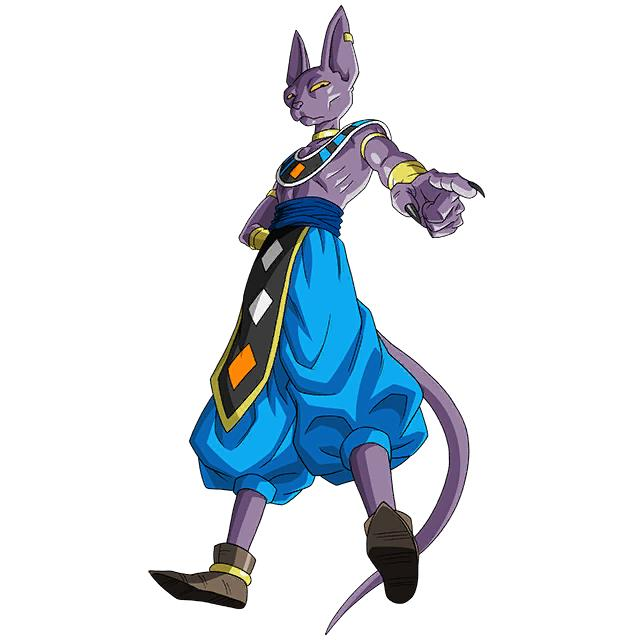

Beerus est un personnage de l'univers de Dragon Ball, créé par Akira Toriyama. Il apparaît principalement dans
Dragon Ball Z : Battle of Gods, puis dans la série Dragon Ball Super. C'est le Dieu de la Destruction de
l'Univers 7. Il est connu pour sa puissance exceptionnelle, son caractère imprévisible et son amour pour la
nourriture.

2. Qui est Beerus ?
Nom : Beerus
Univers : Univers 7
Rôle : Dieu de la Destruction
Apparence : Il ressemble à un chat violet avec de grandes oreilles.
Compagnon : Whis, son maître et assistant.
Personnalité : Il est paresseux, exigeant, parfois capricieux, mais aussi très intelligent.
3. Ses pouvoirs
Beerus possède des pouvoirs incroyables qui lui permettent de détruire des planètes et de combattre les guerriers
les plus puissants.
Le Hakai : une technique qui lui permet d'effacer une cible de l'existence.
Une force immense : il est capable de vaincre des adversaires extrêmement puissants.
Une vitesse exceptionnelle : il se déplace et combat à une vitesse impressionnante.
Une grande maîtrise du combat : il possède une expérience et des techniques très avancées.